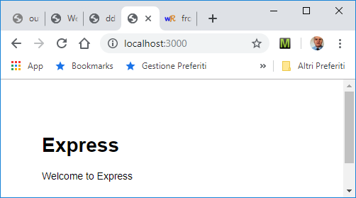
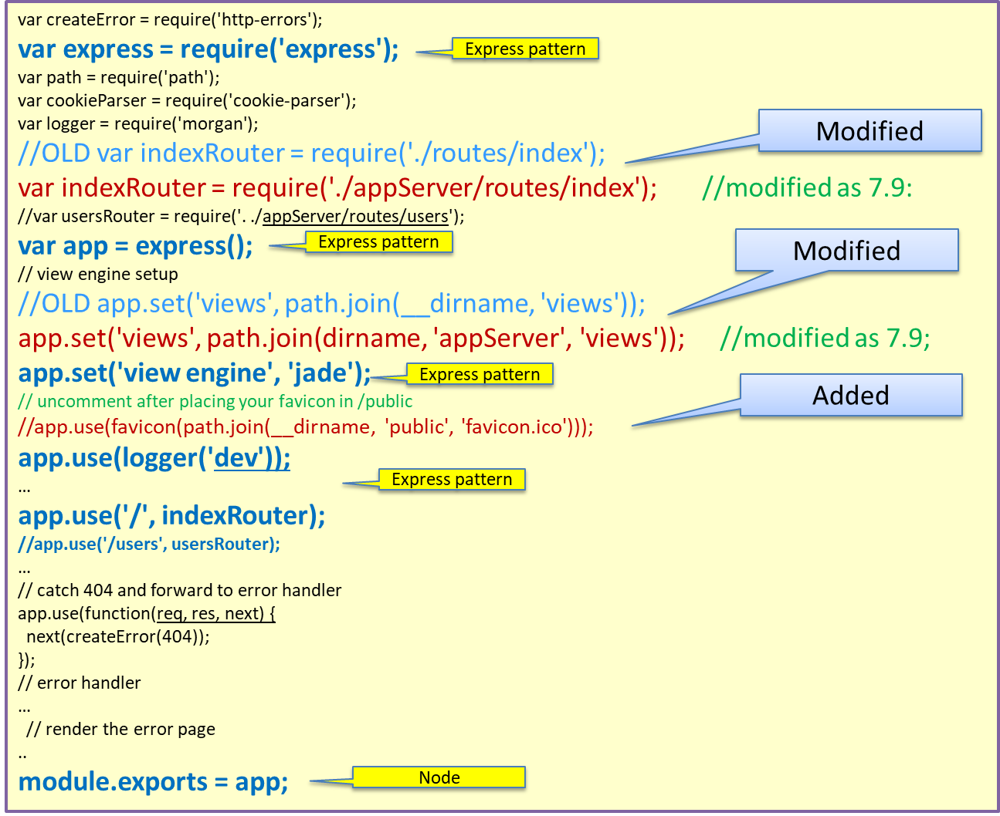

72939 - LAB13 | A frontend in Node.js
LabISS-lectures site
Index
- ...
Starting
Read section 7.8 of
nodeExpressWeb.pdf and execute the following steps:
- Execute npm install -g express-generator.
- In project it.unibo.frontend19, create the folder nodeCode/frontend and open a terminal in this folder.
- Execute express
- Execute npm install
- Execute node bin/www
- Open a browser on http://localhost:3000/.
|

|
We recall that:
- Middleware. In contrast to vanilla Node, where your requests flow through only one function, Express has a
middleware stack (compatible with connect middleware) , which is effectively an array of functions.
- Routing. Routing is a lot like middleware, but the functions are called only when you visit a specific URL with
a specific HTTP method.
- Extensions to request and response objects. Express extends the request and response objects with extra
methods and properties for developer convenience.
- Views. Views allow you to dynamically render HTML.
|
- The code in the generated file bin/www (see nodeCode/frontend/bin/www)
creates a httpServer and passes app as the handler.
- The file app.js (see appOriginal.js) defines the application logic of the server and is structured according to the Express
pattern introduced in nodeExpressWeb.pdf section 7.8
- To understand the work of the server during the rendering phase, read sections 7.5, 7.6, 7.7 of
nodeExpressWeb.pdf.
Refactoring according to the MVC pattern
Read section 7.9 of
nodeExpressWeb.pdf and execute the steps 1-3:
- Create a new folder called appServer.
- In appServer create two new folders, called models and controllers.
- Move the views and routes folders from the root of the application into the appServer folder.
Now modify the
app.js to keep into account the modifications:
|

|
Execute node bin/www: all goes as before.
|
Define the code of the server
Let us now:
- Execute npm install --save ejs in order to use the EJS (now replaced by done.js) rendering engine instead of Jade (also named Pug).
- Execute npm install --save mqtt
- Execute npm install --save socket.io
- npm install coap --save
- move the code of the server from bin/www into a user-defined file frontend/frontendServer.js
(see frontendServer.js).
- define the application code of the server in a new file frontend/frontendServer.js
(see frontendServer.js).
Next